- Módulo: Sistemas Operativos
- Título del trabajo Prácticas de LVM
- Componentes del grupo: Alejandro Ortega Freire y Efraín Hernández Morales
- Curso Académico: 2013/2014
- Fecha de entrega: 10 de Marzo de 2014
1. Instalar SO sobre LVM
Vamos a instalar un sistema operativo GNU/Linux Debian, sobre unos discos con LVM.
- NOTA: Otra forma de producir un efecto similar al de LVM, es mediante el uso de sistemas de ficheros ZFS (Consultar). Nosotros NO vamos a usar ZFS sino LVM en nuestra práctica, pero si algún grupo desea usar ZFS debe hablar con el profesor.
1.1 Preparar MV
Realizar las siguientes tareas:
- Crear MV para Debian, con un disco de 5GB.
- Comenzar a instalar GNU/Linux Debian.
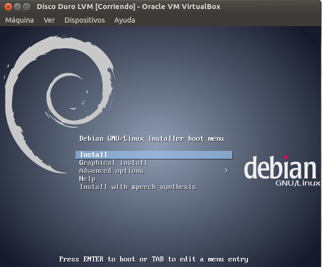
1.2 Particionar
- Crearemos una partición de 100MB para boot. Tener en cuenta que la partición "/boot" va a parte (Fuera de LVM).
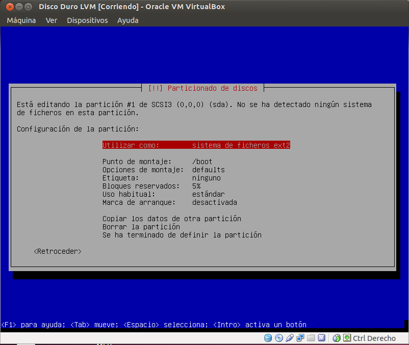
- Crear en el resto una partición LVM. En la partición LVM, podemos hacer un grupo de volumen llamado vg-debian.
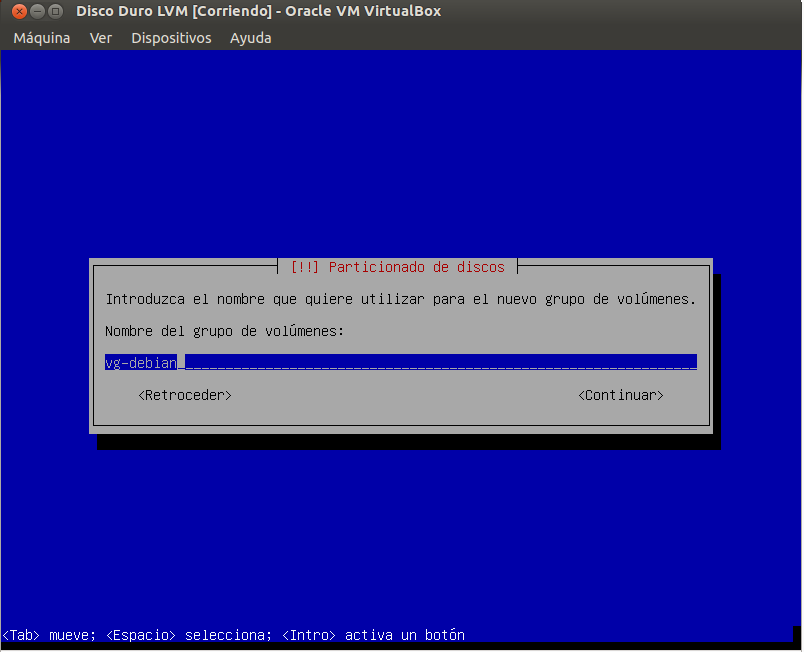
- Dentro del vg-debian, podemos los VL (volúmenes lógicos) siguientes:
- lv-swap (500 MB) usar para área de intercambio
- lv-raiz (4GB) usar como raíz de la instalación del SO.
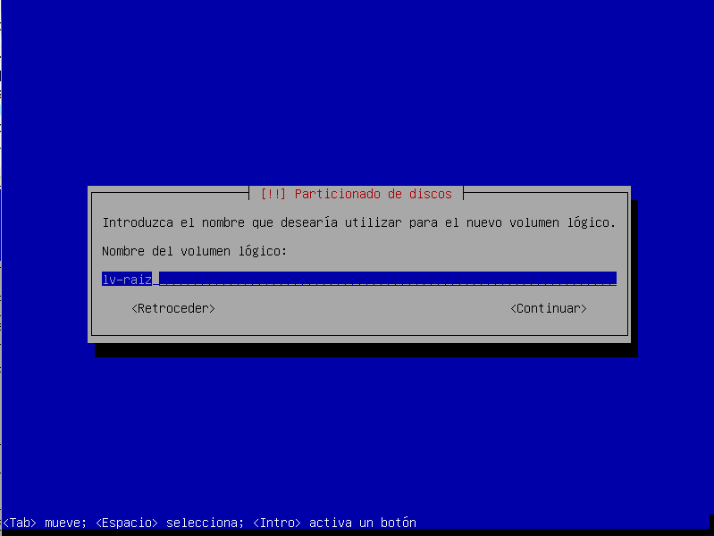
- lv-datos (100MB) usar como /home del sistema.
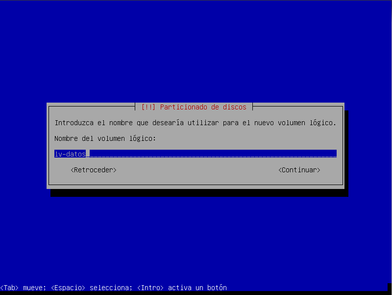
- Vemos que nos ha sobrado espacio. Lo dejamos así porque lo usaremos más adelante.
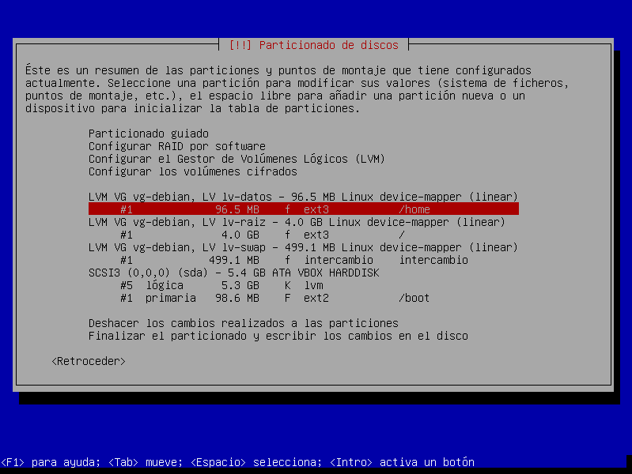
- Instalamos el sistema operativo.
- Reiniciamos el sistema y comprobamos lo que tenemos:
- vgdisplay
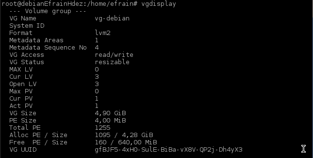
- lvdisplay vg-debian
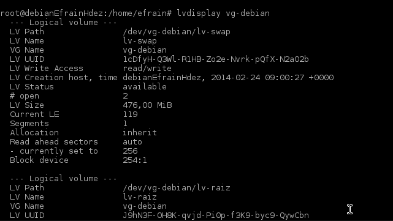
1.3 Ampliar VL
- Ahora podremos ampliar "en caliente", el espacio de lv-datos de 100MB a 400MB.
- Consultar el tamaño actual del volumen lógico: # lvdisplay -v /dev/vg-debian/lv-datos
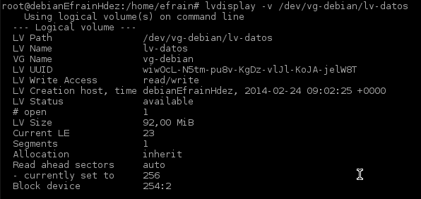
- Para ampliar el tamaño del volumen lógico a 1 GB: # lvextend -L 400 /dev/vg-debian/lv-datos
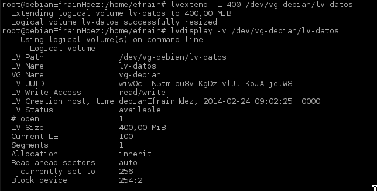
2. Modificar el espacio físico LVM
Consejo: Haz copia de seguridad de la MV (Exportar/importar de VBox).
Vamos a añadir al sistema anterior, más almacenamiento físico LVM, puesto que ya hemos agotado todo el espacio libre de los discos físicos.
Esquema de PV, VG y LV:

2.1 Preparar la MV
- Crear 2 discos virtuales:
- (Disco a) 200MB: con una partición completa del disco
- (Disco b) 750MB: con 3 particiones de 250MB sin definir.
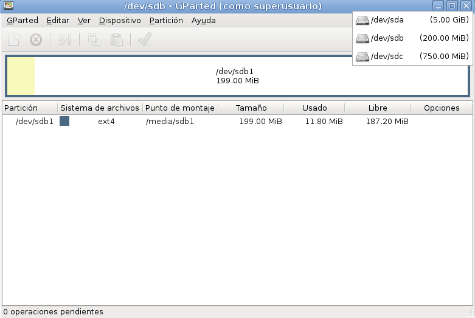
- NOTA: Las particiones las pueden crear con fdisk, gparted, etc.
2.2 Crear VG y VL
- Crear un Grupo de Volumen llamado vg-extra, con el disco (a) y las 2 primeras particiones del (b). (Comando vgcreate)
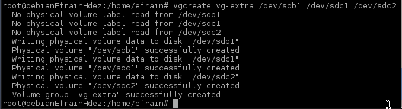
- Crear un nuevo Volumen Lógico llamado lv-extra (Comando lvcreate) con tamaño 700MB.
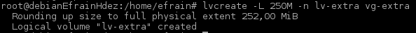
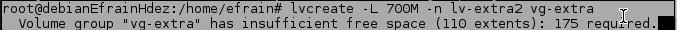
- NOTA: La partición 3 del disco b NO la estamos usando por ahora.
- Comprobamos lo que tenemos:
- vgdisplay vg-extra
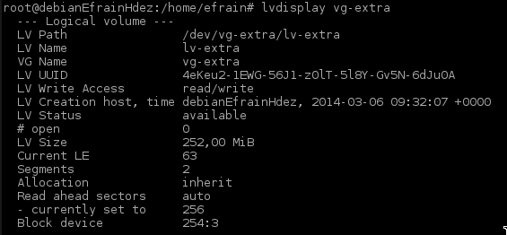
- lvdisplay vg-extra
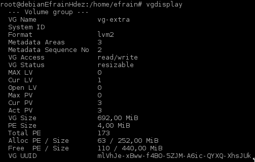
2.3 Escribir información
- Primero vamos a crear directorio (/mnt/vol-extra),donde vamos a montar el nuevo dispositivo (Volumen lógico).
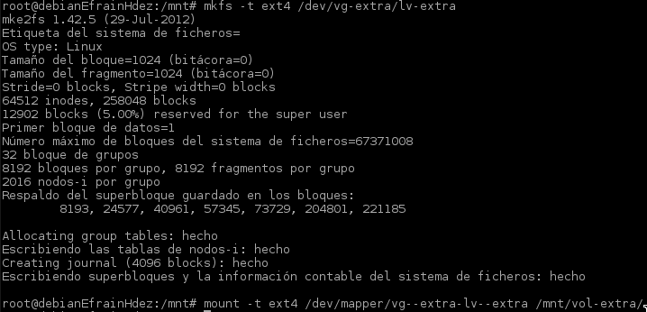
- El nuevo dispositivo /dev/vg-extra/lv-extra no tiene formato. Debe ser formateado antes de montarse.
- Montar el nuevo dispotivo (Volumen Lógico) en la carpeta /mnt/vol-extra. A partir de ahora todo lo que escribamos en dicha carpeta se estará guardando en el dispositivo montado.
- Escribir información en /mnt/vol-extra. Crear algunas carpetas y ficheros con tamaño mayor a cero. Por ejemplo para crear un archivo de tamaño 1M podemos hacer "dd if=/dev/zero of=/mnt/vol-extra/file-size-1M bs=512 count=2048". El comando dd hay que usarlo con precaución.
- Comprobar el tamaño de VL (lvdisplay), y el espacio disponible (df -hT).
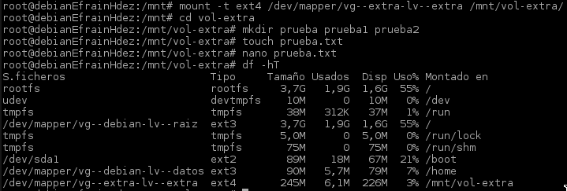
2.4 Añadir más tamaño
- Añadir la tercera partición del disco (b) (no utilizada) al VG vg-extra.
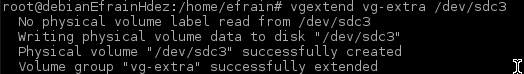
- Ampliar el tamaño de lv-extra a 950MB (Comando lvextend). Comprobar el aumento del espacio (lvdisplay)
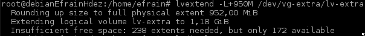
- Comprobar que los datos/información no se han borrado al ampliar el volumen lógico.
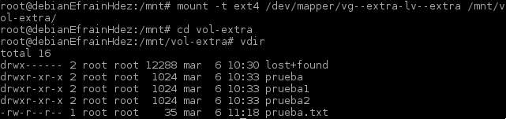
2.5 Quitar un disco físico
- NOTA: En LVM los discos físicos se llaman volúmenes físicos (Physical Volumes).
- Vamos a quitar el disco (b) del VG, sin que se pierda la información. Comprobar el tamaño utilizado con nuestros datos en vg-extra: du -sh /mnt/vol-extra. Este valor debe ser menor o igual al tamaño del disco (a).
- ¿Cómo quitamos el disco (b) del VG? (Consultar enlace)
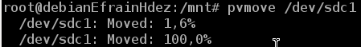
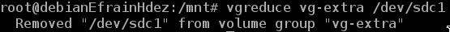
- Comprobar que sí se mantiene la información.
- Comprobamos lo que tenemos:
- vgdisplay
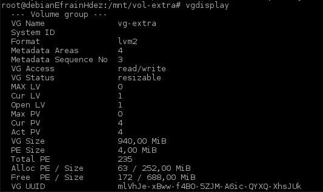
- lvdisplay vg-debian
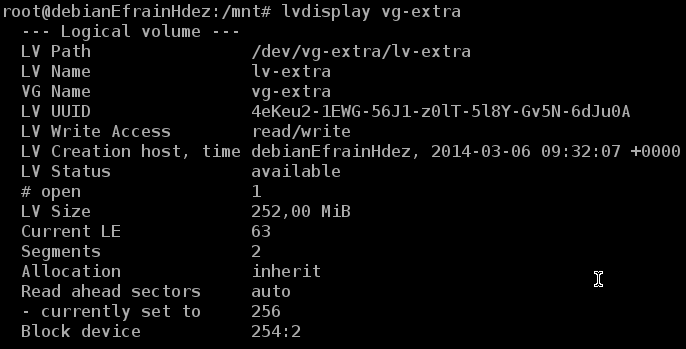